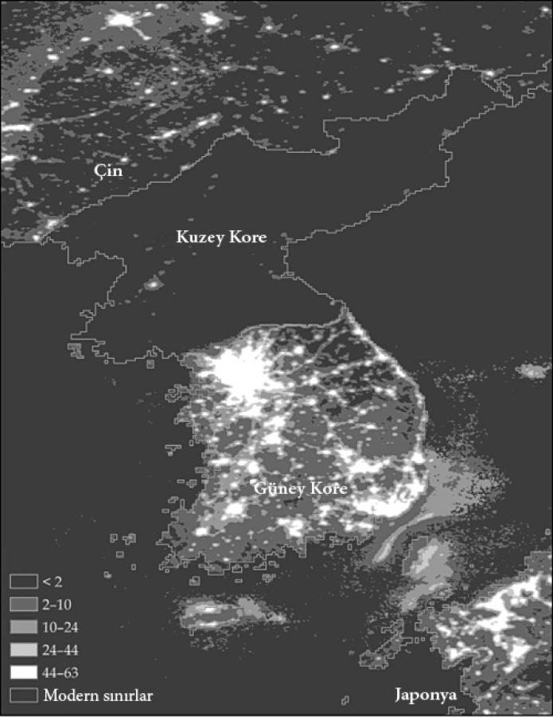

3

Zenginliğin ve yoksulluğun inşası
38. Paralel’in iktisadı
1945 yazında, İkinci Dünya Savaşı sona yaklaşırken, Kore’deki Japon sömürgesi çökmeye başladı. Japonya’nın 15 Ağustos’ta koşulsuz teslim olmasını izleyen bir ay içinde Kore 38. Paralel üzerinden iki nüfuz alanına bölündü. Güney, Birleşik Devletler, kuzey de Rusya’nın idaresine verildi. Soğuk Savaş’ın endişe dolu sükûneti Haziran 1950’de Kuzey Kore ordusunun Güney’i işgal etmesiyle bozuldu. Kuzey Koreliler başlangıçta akınlar düzenleyip başkent Seul’ü ele geçirseler de sonbaharda tamamen geri çekildiler. Hwang Pyong-Won ve erkek kardeşi de işte o zaman birbirlerinden koptular. Hwang Pyong-Won saklanmayı ve bu sayede Kuzey Kore ordusuna alınmamayı başardı. Güney’de kaldı ve eczacılık yaptı. Seul’de Güney Kore ordusunun yaralı askerlerini tedavi eden doktor kardeşi ise Kuzey Kore ordusu geri çekilirken kuzeye götürüldü. 1950’de birbirinden koparılan iki kardeş, iki devletin sonunda sınırlı bir aile birleşimi programı başlatmak için anlaşmasıyla ilk kez 50 yıl sonra 2000’de yeniden bir araya geldiler.
Hwang Pyong-Won’un kardeşi bir doktor olarak hava kuvvetlerinde görevlendirildi; bu askeri bir diktatörlük için iyi bir işti. Fakat Kuzey Kore’de ayrıcalıkları olanların bile durumu iyi sayılmazdı. Kardeşler bir araya geldiğinde Hwang Pyong-Won 38. Paralel’in kuzeyinde hayatın nasıl olduğunu sordu. Onun bir arabası vardı oysa kardeşinin yoktu. “Telefonun var mı?” diye sordu kardeşine. “Hayır” diye yanıtladı kardeşi. “Dışişleri Bakanlığı’nda çalışan kızımın var fakat kodu bilmiyorsan arayamıyorsun.” Birleşme esnasında Kuzey Kore’den gelen herkesin para istediğini hatırlayan Hwang Pyong-Won kardeşine biraz para teklif etti. Fakat kardeşi, “O parayla geri dönersem hükümet ‘Parayı bize ver’ der, o yüzden sende kalsın” diye yanıtladı. Hwang Pyong-Won kardeşinin paltosunun yırtık pırtık olduğunu fark edince “O paltoyu çıkarıp at, dönerken de bunu giy” diyerek kendi paltosunu vermek istedi. “Yapamam” diye yanıtladı kardeşi. “Buraya gelmek için devletten alınmış emanet paltodur.” Hwang Pyong-Won ayrılırken, kardeşinin ne kadar huzursuz ve sanki biri dinliyormuş gibi sürekli gergin olduğunu anımsıyor. Sandığından daha da fakirdi. Kardeşi iyi yaşadığını söylemişti fakat Hwang Pyong-Won onun korkunç göründüğünü ve tırmık kadar ince olduğunu düşünüyordu.
Güney Kore halkının yaşam standartları Portekiz ve İspanya’da yaşayanlarınkilerle aynıdır. Kuzeyin ya da adı Kore Demokratik Halk Cumhuriyeti olan Kuzey Kore’nin yaşam standartları ise Güney Kore’nin yaklaşık onda biri kadar, yani bir Sahra-altı Afrika ülkesi düzeyindedir. Kuzey Kore’nin sağlık koşulları ise daha da kötü durumdadır. Bir Kuzey Koreli’nin ortalama yaşam süresi 38. Paralel’in güneyindeki kuzenlerine göre yaklaşık 10 yıl daha azdır. Harita 7 gece çekilmiş uydu görüntülerindeki ışık yoğunluğunu gösteren verilerle iki Kore arasındaki ekonomik uçurumu çarpıcı bir biçimde sergiliyor. Kuzey Kore elektriksizlik nedeniyle neredeyse tamamen karanlıkken Güney Kore ışıl ışıl parlıyor.
Bu çarpıcı farklılık çok eskiye dayanmıyor. Aslında İkinci Dünya Savaşı’nın bitiminden önce ortada yoktu. Fakat 1945’ten sonra Kuzey ve Güney’deki farklı hükümetler ekonomilerini örgütlemek için birbirinden çok farklı yöntemler uyguladılar. Harvard ve Princeton’da öğrenim görmüş sadık antikomünist Syngman Rhee, Birleşik Devletler’in de ciddi desteğini alarak Güney Kore’yi yönetti ve ilk ekonomik ve siyasal kurumları o şekillendirdi. Rhee, 1948’de başkan seçildi. Kore Savaşı’nın ve 38. Paralel’in güneyini saran komünizm tehdidinin cenderesindeki Güney Kore demokratik bir ülke değildi. Hem Rhee hem de onun kadar ünlü halefi General Park Chung-Hee, iki otoriter başkan olarak tarihe geçtiler. Fakat ikisi de özel mülkiyete dayalı bir piyasa ekonomisini benimsedi ve Park 1961’den sonra hızlı ekonomik büyümenin önündeki devlet engelini kaldırarak başarılı şirketlere kredi ve devlet yardımı sağladı.
38. Paralel’in kuzeyinde durum farklıydı. Japonya karşıtı komünist partizanların liderlerinden biri olan Kim Il-Sung 1947’de bir diktatöre dönüştü ve Juche8 sisteminin bir parçası olarak Sovyetler Birliği’nin yardımıyla devlet güdümlü katı bir ekonomik sistem hayata geçirdi. Özel mülkiyet kaldırıldı ve piyasalara yasak getirildi. Özgürlükler yalnızca piyasada değil, Kuzey Korelilerin yaşamlarının her alanında kısıtlandı; elbette ki Kim Il-Sung’un ve ardından oğlu-halefi Kim Jong-Il’in etrafında oluşan küçük bir idari elit hariç tutulmak kaydıyla.

Harita 7: Güney Kore’deki ışıklar ve Kuzey Kore’deki karanlık.
Güney ve Kuzey Kore’nin ekonomik geleceklerinin bariz biçimde farklılaşması bizi şaşırtmamalıdır. Çok geçmeden Kim Il-Sung yönetimindeki ekonominin ve Juche sisteminin tam bir felaket olduğu ortaya anlaşıldı. En hafif tabirle kapalı kutu olduğunu söyleyebileceğimiz bir devlet olan Kuzey Kore’yle ilgili detaylı verilere ulaşmak mümkün değil. Buna karşın, eldeki deliller beklenenin ötesinde bir sıklıkla gerçekleşen kıtlıklarla ilgili bilgilerimizi doğruluyor: Yalnızca sanayi üretimini artırmada başarısız olunmadı, Kuzey Kore aynı zamanda tarımsal verimlilikte de bir çöküş yaşadı. Özel mülkiyetin olmayışı, ister yatırım yapmak için ister verimliliği artırmak, hatta idame ettirmek için olsun, az sayıda insanın teşvik bulduğu anlamına geliyordu. Boğucu, baskıcı rejim yeniliğe ve yeni teknolojilerin hayata geçirilmesine olanak tanımıyordu. Fakat Kim Il-Sung’un, KimJong-Il’in ve ahbaplarının reform yapmak, özel mülkiyete, piyasalara, özel sözleşmelere olanak tanımak ya da ekonomik ve siyasal kurumlarda değişikliğe gitmek gibi bir niyetleri yoktu. Böylece Kuzey Kore ekonomik bakımdan durgunluk yaşamaya devam etti.
Bu esnada Güney’deki ekonomik kurumlar yatırım ve ticareti teşvik ediyordu. Güney Koreli siyasetçiler eğitime yatırım yaparak yüksek okuryazarlık ve eğitim oranları yakaladılar. Güney Koreli şirketler daha eğitimli bir nüfusun, yatırım ve sanayileşmeyi teşvik eden politikaların, ihraç pazarlarının ve teknoloji transferinin avantajlarından yararlanmakta hızlıydılar. Güney Kore hızla “Doğu Asya’nın Mucize Ekonomileri” arasına girdi ve dünyanın en hızlı büyüyen ülkelerinden biri haline geldi.
1990’ların sonuna kadar, neredeyse yarım yüzyılda, Güney Kore’nin büyümesi ve Kuzey Kore’nin durgunluğuyla, bir zamanlar “bütün” olan bu iki ülke arasındaki gedik 10 misli arttı. Birkaç yüzyılın nasıl bir fark yaratacağını siz düşünün. Güney Kore’nin ekonomik başarısıyla kıyaslandığında Kuzey Kore’nin büyümeye engel olan ve milyonları açlığa sürükleyen ekonomik felaketi çarpıcı boyuttadır; ne kültür ne coğrafya ne de cehalet Kuzey ve Güney Kore’nin apayrı rotalarını açıklayabilir. Yanıt için kurumlara bakmak zorundayız.
Sömürücü ve kapsayıcı ekonomik kurumlar
Ülkelerin ekonomik başarıları kurumlara, ekonominin işleyişini belirleyen kurallara ve bireyleri motive eden teşviklere göre farklılık gösterir. Kuzey ve Güney Kore’deki gençleri ve hayattan neler beklediklerini bir düşünün. Kuzeydekiler girişim inisiyatifi, yaratıcılık ya da onları kalifiye işlere hazırlayacak yeterli eğitim olmadan, yoksulluk içinde büyür. Okulda aldıkları eğitimin büyük kısmı rejimin meşrulaştırılmasına destek sağlayan katışıksız bir propagandadan ibarettir; bilgisayar şöyle dursun, kitap sayısı bile azdır. Okulu bittikten sonra herkes 10 yıl askerlik yapmak zorundadır. Bu gençler mülk edinemeyeceklerini, bir iş kuramayacaklarını ve yaşamlarını sürdürmek için yasadışı ekonomik faaliyetlere girişseler bile, yaşam standartlarını yükseltemeyeceklerini bilirler. Beceri ve birikimlerini beğendikleri ve ihtiyaç duydukları ürünleri satın almak için kullanabilecekleri piyasalara yasal yollardan erişemeyeceklerini de bilirler. Hangi insan haklarına sahip olacaklarından bile emin değildirler.
Güneydekiler ise iyi bir eğitim alırlar ve seçtikleri dalda gayret sarf edip başarı göstermeleri için teşvik görürler. Güney Kore özel mülkiyet üzerine kurulu bir pazar ekonomisidir. Güney Koreli gençler girişimci ya da işçi olarak başarı gösterdikleri takdirde bir gün yatırımlarının karşılığını alabileceklerini bilirler; yaşam standartlarını yükseltebilir, tüketim malları (araba, ev) ve sağlık hizmetleri satın alabilirler.
Güney’de devlet ekonomik etkinliğe destek olur ve asayişi korur. Dolayısıyla girişimciler için bankalardan ve finans piyasalarından borç para almak, yabancı şirketler için Güney Koreli şirketlerle ortaklığa girmek ve bireyler için ipotekle ev sahibi olmak mümkündür. Güney Kore’de genel anlamda istediğiniz her işi kurmakta özgürsünüz. Kuzey Kore’de ise değilsiniz... Güney’de işçi tutabilir, ürün ve hizmetlerinizi satabilir, paranızı pazarda dilediğiniz gibi harcayabilirsiniz. Kuzey’de yalnızca karaborsalar vardır. İşte bu farklı kurallar Kuzey ve Güney Korelilerin yaşamına hükmeden kurumlardır.
Güney Kore ve Birleşik Devletler’deki gibi kapsayıcı ekonomik kurumlar, bireylerin yetenek ve becerilerini en iyi şekilde kullanmaları ve istedikleri tercihleri yapabilmeleri için büyük halk kitlelerinin ekonomik etkinliğe katılmasına olanak tanıyıp teşvik sağlayan kurumlardır. Kapsayıcı olabilmeleri için, güvence altına alınmış özel mülkiyete, tarafsız bir hukuk sistemine ve herkesin mübadele ve sözleşme yapabileceği eşit şartlar sağlayan bir kamu hizmetleri hükmüne sahip olmalıdırlar. Ayrıca yeni iş sahalarının açılmasına ve insanların kendi mesleklerini seçmelerine olanak tanınmalıdır.
Güney Kore’nin Kuzey Kore’yle ve Birleşik Devletler’in Latin Amerika’yla arasındaki zıtlık genel bir ilkeyi ortaya koyuyor. Kapsayıcı ekonomik kurumlar ekonomik etkinliği, verimlilik artışını ve ekonomik refahı teşvik eder. Güvence altına alınmış özel mülkiyet hakları yalnızca bu haklara sahip olanlar yatırım yapmaya istekli olacağı ve verimliliği artıracağı için esastır. Hasılatının çalınacağını, kamulaştırılacağını ya da vergi yoluyla hepsinin alınacağını düşünen bir iş adamının değil yatırım ve yenilik için, çalışmak için bile çok az isteği olacaktır. Fakat bu tür haklar toplumdaki insanların büyük kısmı için geçerli olmalıdır.
1680’de İngiliz hükümeti Batı Hint’teki Barbados sömürgesinde bir nüfus sayımı düzenledi. Bu sayım, adada yaşayan yaklaşık 60 bin kişinin neredeyse 39 bininin, nüfusun kalan üçte birlik bölümünün mülkiyetindeki Afrikalı köleler olduğunu ortaya koydu. Aslına bakılırsa bu köleler çoğunlukla en büyük 175 şeker plantasyonu sahibinin –ayrıca arazinin çoğuna da sahiplerdi– mülkiyetindeydiler. Bu büyük plantasyon sahipleri, arazileri ve hatta köleleri üzerinde güvence altına alınmış ve iyi uygulanan mülkiyet haklarına sahipti. Bir plantasyon sahibi diğer bir plantasyon sahibine köle satmak isterse bunu yapabilir ve bu satışı ya da düzenleyeceği başka herhangi bir sözleşmeyi uygulaması için bir mahkemeye güvenebilirdi. Neden? Çünkü adadaki 40 hâkim ve sulh hâkiminden 29’u büyük plantasyon sahibiydi. Ayrıca sekiz en üst düzey askeri yetkilinin tamamı da öyle... Barbados kapsayıcı ekonomik kurumlara sahip değildi. Çünkü adanın elit kesimi için geçerli olan iyi tanımlanmış, güvence altına alınmış ve uygulamaya konulmuş mülkiyet hakları ve sözleşmeler olmasına karşın, nüfusun üçte ikisini eğitimden ve ekonomik fırsatlardan yararlanma imkânı olmayan, yetenek ya da becerilerini kullanmak için ne olanağa ne de teşvike sahip köleler oluşturuyordu. Kapsayıcı ekonomik kurumlar yalnızca elit kesim için değil, toplumun geniş bir kesiti için güvence altına alınmış mülkiyet hakları ve ekonomik fırsatlar gerektirir.
Güvence altına alınmış mülkiyet hakları, hukuk, kamu hizmetleri ve özgürlük; bunların hepsi devlete dayanır, yani düzen sağlamak için zorlayıcı gücü olan, hırsızlık ve yolsuzluğu önleyen ve özel şahıslar arasındaki sözleşmeleri uygulayan kuruma. İyi işlemesi için toplumun başka kamu hizmetlerine de ihtiyacı vardır; malların nakliyesi için yollara ve bir ulaştırma şebekesine, ekonomik faaliyetin gelişmesi için bir kamusal altyapı sistemine ve yolsuzluk ve suiistimalin önüne geçmek için bir tür temel düzenlemeye. Bu kamu hizmetlerinin çoğu piyasa ve özel şahıslar tarafından sağlanabilse de bunların geniş ölçekte uygulanabilmesi için gerekli koordinasyon düzeyi çoğunlukla merkezi bir otoriteyi zorunlu kılar. Bu nedenle devlet, düzenin, özel mülkiyetin, sözleşmelerin uygulayıcısı ve çoğu zaman kamu hizmetlerinin en büyük sağlayıcısı olarak ekonomik kurumlarla kaçınılmaz bir biçimde iç içe geçmiştir. Kapsayıcı kurumlar devlete ihtiyaç duyar ve onu kullanırlar.
Kuzey Kore’nin ya da sömürge Latin Amerika’nın –daha önce tanımladığımız mita, encomienda ya da repartimiento gibi– ekonomik kurumları bu özelliklere sahip değildir. Kuzey Kore’de özel mülkiyet yoktur. Sömürge Latin Amerika’da özel mülkiyet İspanyollar için geçerliydi, yerli halkın mülkiyet hakları son derece emniyetsizdi. Bu toplumların hiçbirinde geniş halk kitleleri istedikleri ekonomik kararları alamıyor, ekonomik bakımdan istedikleri gibi hareket edemiyordu; kitlesel baskıya maruz kalıyorlardı. Hiçbirinde devletin gücü refah düzeyini artıracak temel kamu hizmetlerinin sağlanması için kullanılmıyordu. Kuzey Kore’de devlet propaganda için bir eğitim sistemi inşa etti ancak kıtlığın önüne geçemedi. Latin Amerika’da devlet yerli halklara baskı yapmaya odaklanmıştı. Bu toplumların hiçbirinde eşit şartlara ya da tarafsız bir hukuk sistemine rastlanmıyordu. Kuzey Kore’de hukuk sistemi iktidardaki Komünist Parti’nin bir koludur, Latin Amerika’da ise halk kitlelerine ayrımcılık yapmak için kullanılan bir araçtı. Kapsayıcı olarak adlandırdıklarımızla karşıt özelliklere sahip bu gibi kurumlara sömürücü –toplumun belli bir kesiminin çıkarları için başka bir kesiminin gelir ve zenginliğini sömürdükleri için– kurumlar diyoruz.
Büyümenin lokomotifleri
Kapsayıcı ekonomik kurumlar, insanlara hem yeteneklerine en uygun mesleklerde çalışma özgürlüğü sunan hem de bunu yapabilmeleri için eşit şartlar sağlayan kapsayıcı piyasalar yaratır. İyi fikirleri olanlar iş kurabilir, işçiler daha verimli çalışabilecekleri faaliyetlere yönelebilir ve daha verimli şirketler daha az verimli olanların yerini alabilir. Kapsayıcı piyasalar ile mita idaresinde becerilerine ya da isteyip istemediklerine bakmaksızın pek çok kişinin gümüş ve cıva madenlerinde çalışmaya zorlandığı Peru ve Kolombiya sömürgelerinde insanların iş sahalarını nasıl seçtiklerini bir karşılaştırın. Kapsayıcı piyasalar yalnızca serbest piyasalar değildirler. 17. yüzyılda Barbados’da da piyasalar vardı. Fakat benzer bir biçimde, plantasyon sahiplerinden oluşan dar bir elit dışında özel mülkiyetten yoksundu ve piyasaları kapsayıcı olmaktan çok uzaktı: Bunlar, kölelerin aslında ekonomik kurumların bir parçası olduğu, nüfusun büyük çoğunluğunun sistematik olarak baskı gördüğü ve hangi işi seçip yeteneklerini ne şekilde değerlendireceklerine karar verme olanağının ellerinden alındığı piyasalardı.
Kapsayıcı ekonomik kurumlar refahın iki lokomotifine daha zemin hazırlarlar: Teknoloji ve eğitim. Sürdürülebilir ekonomik büyümeye neredeyse her zaman insan (emek), toprak ve sabit sermayenin (binalar, makineler vs.) daha verimli hale gelmesini sağlayan teknolojik yenilikler eşlik eder. Sadece 100 yıl kadar geriye gidelim ve bugün bizim kanıksadığımız uçaklardan, otomobillerden ya da çoğu ilaç ve sağlık hizmetinden yararlanma imkânı olmayan büyük-büyük-büyükbabalarımızı ve büyükannelerimizi düşünelim. Tabii sıhhi tesisattan, havalandırmadan, alışveriş merkezlerinden, radyodan, sinemadan söz etmiyoruz bile. Hele enformasyon teknolojisinden, robotbilimden ya da bilgisayar kontrollü makinelerden hiç bahsetmiyoruz. Bir iki kuşak daha geriye gidersek teknoloji ve yaşam standartları düzeyi daha da geriler; o kadar ki, çoğu insanın nasıl hayat mücadelesi verebildiğini bile anlamakta güçlük çekeriz. Bu ilerlemeler bilim ve Thomas Edison gibi kârlı bir iş kurmak için bilimi uygulamaya koyan girişimciler sayesinde kaydedildi. Bu yenilik süreci özel mülkiyeti teşvik eden, sözleşmeleri uygulamaya koyan, eşit şartlar sağlayan ve yeni teknolojileri hayata geçirecek yeni iş sahalarının kurulmasına olanak tanıyıp bunlara teşvik sunan ekonomik kurumlar sayesinde mümkün oldu. Bu nedenle ne Thomas Edison’ın Meksika ya da Peru’dan değil de Birleşik Devletler’den çıkması ne de günümüzde Samsung ve Daewoo gibi yenilikçi teknolojiler üreten şirketlerin Kuzey Kore yerine Güney Kore’den çıkması şaşırtıcı olmamalıdır.
Evde, işte ve okulda gerekli olan eğitim, beceri, yetenek ve teknik bilgi, teknolojiyle çok yakından ilgilidir. 100 yıl öncekinden çok daha üretken olmamızın nedeni makinelerle somutlaşan daha iyi teknolojiler değildir yalnızca; aynı zamanda işçilerin sahip olduğu daha ileri teknik bilgidir. Onları nasıl kullanacağını bilen işçiler olmasaydı dünyadaki tüm teknolojiler faydasız hale gelirdi. Ancak yalnızca makineleri çalıştırabilmekten daha büyük beceri ve ehliyet isteyen işler vardır. İlerlememizi sağlayan bilimsel bilgiyi üreten ve bu teknolojileri farklı iş sahalarına adapte edip uygulamamızı sağlayan iş eğitimi ve iş becerisidir. Aslına bakılırsa, 1. bölümde gördüğümüz gibi, Sanayi Devrimi’nde ve sonrasında Thomas Edison gibi pek çok mucit yüksek eğitim görmemişti ve geliştirdikleri teknolojiler günümüz teknolojisinden çok daha basitti. Fakat günümüzdeki teknolojik değişim hem mucitler hem de işçiler için eğitim gerektirmektedir. İşte burada eşit şartlar yaratan ekonomik kurumların önemini görürüz. Birleşik Devletler Bill Gates, Steve Jobs, Sergey Brin, Larry Page, Jeff Bezos ve benzerlerini ve de bu girişimcilerin üzerine iş kurdukları enformasyon teknolojisi, nükleer enerji, biyoteknoloji ve daha başka alanlarda önemli keşifler yapmış yüzlerce bilim insanını yetiştirebilir ya da başka ülkelerden kendine çekebilir. Birleşik Devletler’deki çoğu genç, diledikleri ya da becerebildikleri kadar eğitim olanağına sahip oldukları için faydalanılmayı bekleyen bir yetenek arzı söz konusudur. Bir de nüfusun büyük kısmının okula gidecek imkânının olmadığı, gitmeyi başarsalar bile eğitimin içler acısı durumda olduğu ve öğretmenlerin okula gelmediği, gelseler dahi belki de kitap bulamayacakları Kongo ya da Haiti gibi farklı bir ülke düşünün.
Fakir ülkelerin düşük eğitim düzeyi, ebeveynlere çocuklarını eğitmeleri için teşvik yaratmayı başaramayan ekonomik kurumlardan ve devleti okullar inşa etmesi, onları finanse edip desteklemesi ve ebeveynlerle çocukların taleplerini karşılaması için hükümeti harekete geçirmeyi başaramayan siyasal kurumlardan kaynaklanır. Bu ülkelerin düşük eğitim düzeyleri ve kapsayıcı piyasalarının olmayışı için ödedikleri bedel ise çok ağırdır. Genç yetenekleri harekete geçirmeyi başaramazlar. Hiçbir zaman hayattaki yerlerini keşfedecek fırsatları olmadığı için şimdi az eğitim görmüş birer çiftçi olarak çalışan, yapmayı istemedikleri şeyleri yapmaya zorlanan ya da askere alınan pek çok potansiyel Bill Gates’leri ve belki de bir ya da iki Albert Einstein’ları vardır.
Ekonomik kurumların kapsayıcı piyasaların potansiyelinden yararlanma, teknolojik yeniliği teşvik etme, insanlara yatırım yapma ve çok sayıda insanın yetenek ve becerilerini harekete geçirme kudreti ekonomik büyüme için hayati niteliktedir. Pek çok ekonomik kurumun neden bu basit hedeflere ulaşmayı başaramadığını açıklamak ise bu kitabın ana temasıdır.
Sömürücü ve kapsayıcı siyasal kurumlar
Tüm ekonomik kurumların yaratıcısı toplumdur. Örneğin Kuzey Kore’nin ekonomik kurumları, 1940’larda yönetimi ele geçiren komünistler tarafından yurttaşlarına dayatılırken Latin Amerika’dakiler de İspanyol conquistadorlar tarafından dayatıldı. Güney Kore, Kuzey Kore’den çok farklı ekonomik kurumlara sahip oldu, çünkü toplumu nasıl inşa edeceklerine farklı çıkarları ve hedefleri olan farklı insanlar karar verdi. Başka bir ifadeyle, Güney Kore’nin farklı bir siyaseti vardı.
Siyaset, bir toplumun kendini yönetecek kuralları seçtiği bir süreçtir. Siyasetin kurumları kuşatmış olmasının ise basit bir nedeni vardır; kapsayıcı kurumlar ülkenin ekonomik refahı için iyi olabilir fakat sömürücü kurumlar oluşturmak Kuzey Kore Komünist Partisi elitleri ya da sömürge Barbados’undaki şeker plantasyonu sahipleri gibi bazı insanlar ya da gruplar için daha kârlıdır. Kurumlar üzerine bir çatışma olduğunda sonuç siyaset oyununda hangi kişi ya da grupların kazandığına, kimin daha fazla destek bulabildiğine, ek kaynaklar elde ettiğine ve daha etkin ittifaklar kurduğuna bağlıdır. Kısaca, kimin kazanacağı, siyasal gücün toplumdaki dağılımıyla ilgilidir.
Bir toplumun siyasal kurumları, bu oyunun sonucunu belirleyen temel etkenlerden biridir. Siyasal kurumlar siyasette teşvikleri yöneten kurallardır. Hükümetin nasıl seçileceğini ve hangi bölümünün neyi yapmaya yetkisi olduğunu onlar belirler. Siyasal kurumlar toplumda gücün kimin elinde olduğunu ve bu gücün ne amaçla kullanılabileceğini belirler. Güç dağılımı yeterince eşit değilse ve sınırlandırılmamışsa siyasal kurumlar mutlakiyetçidir, tıpkı tarih boyunca dünyanın dört bir yanında hüküm süren mutlak monarşiler gibi. Kuzey Kore ya da sömürge dönemi Latin Amerika’sındaki örnekler gibi mutlakiyetçi siyasal kurumların mevcut olduğu koşullarda bu gücü ellerinde tutanlar hem toplumun sırtından zenginleşmelerini sağlayacak hem de güçlerini artıracak ekonomik kurumlar inşa edebilirler. Buna karşılık, gücü toplumun geniş kesimlerine dağıtan ve ona sınırlama getiren siyasal kurumlar çoğulcudur. Siyasal güç tek bir kişinin ya da dar bir grubun eline geçeceğine geniş tabanlı bir koalisyonun elinde kalır.
Çoğulculuk ve kapsayıcı ekonomik kurumlar arasında yakın bir ilişki olduğu açıktır. Fakat anlaşılması gereken asıl önemli nokta, Güney Kore ve Birleşik Devletler’in kapsayıcı ekonomik kurumlara sahip olmalarının nedeni yalnızca çoğulcu siyasal kurumlarının olması değildir; aynı zamanda yeterince merkezileşmiş ve güçlü devletlerinin olmasıdır. Tezat oluşturan çarpıcı bir örnek, bir Doğu Afrika ülkesi olan Somali’dir. İlerde göreceğimiz gibi, Somali’de siyasal güç çok uzun zamandır toplumun geniş kesimlerine dağılmış bir haldedir; neredeyse çoğulcu denilebilecek bir biçimde. Somali kurumları gücü geniş kesimlere yaymaktadır, fakat kimin ne yaptığını kontrol edip müeyyide getirebilecek gerçek bir otorite yoktur. Toplum ve birbirleri üzerinde hâkimiyet kuramayan taban tabana zıt klanlara bölünmüştür. Bir klanın gücünü sınırlayan tek şey yalnızca diğerinin silahlarıdır. Bu güç dağılımı kapsayıcı kurumlara değil kaosa yol açtı ve bu durumun temelinde Somali devletinin en ufak bir siyasal merkeziyete ya da devlet merkeziyetine sahip olmaması; ayrıca ne ekonomik faaliyeti ve ticareti desteklemek ne de yurttaşlarının temel güvenliğini sağlamak için asgari düzeyde bile olsa bir hukuki düzen oturtamaması yatıyor.
En ünlü ve genel kabul gören devlet tanımını yapan Max Weber devleti toplumdaki “meşru şiddet tekeli” olarak tarif eder. Devlet bu tür bir tekel ve bu tekelin gerektirdiği ölçüde merkeziyet olmadan kamu hizmetlerini yerine getirmek ve ekonomik faaliyeti teşvik edip düzenlemek şöyle dursun, kanun ve düzeni sağlama rolünü dahi yerine getiremez. Devlet siyasal merkeziyeti sağlayamadığında ise toplum er ya da geç kaosa sürüklenir; Somali’de olduğu gibi.
Yeterince merkezileşmiş ve çoğulcu siyasal kurumları, “kapsayıcı siyasal kurumlar”, bu koşulların ikisini de sağlayamayan kurumları ise “sömürücü kurumlar” olarak adlandıracağız.
Ekonomik ve siyasal kurumlar arasında güçlü bir sinerji vardır. Sömürücü siyasal kurumlar gücü dar bir elitin elinde yoğunlaştırır ve bu gücün uygulanması konusunda çok az kısıtlama getirir. Bu durumda genellikle ekonomik kurumlar bu elit tarafından toplumun geri kalanının kaynaklarının sömürülmesi için yapılandırılır. Böylece sömürücü ekonomik kurumlar doğal olarak sömürücü siyasal kurumlara eşlik ederler. Aslına bakılırsa, varlıklarını sürdürebilmeleri için doğaları gereği sömürücü siyasal kurumlara bel bağlamaları gerekir. Gücü geniş bir biçimde dağıtan kapsayıcı siyasal kurumlar ise çoğunluğun kaynaklarına el koyan, giriş engelleri getiren ve yalnızca dar bir kesim faydalansın diye piyasaların işleyişine baskı yapan ekonomik kurumların kökünü kazıma eğilimindedir.
Örneğin Barbados’da köle sömürüsüne dayalı plantasyon sistemi, kölelere baskı uygulayan ve onları siyasal sistemin tamamen dışına iten siyasal kurumlar olmasaydı varlıklarını sürdüremezlerdi. Dar bir komünist elitin çıkarları için milyonları yoksulluğa iten Kuzey Kore’deki ekonomik sistem de Komünist Parti’nin mutlak siyasal hâkimiyeti olmadan düşünülemez.
Sömürücü ekonomik ve siyasal kurumlar arasındaki bu sinerjik ilişki güçlü bir etkileşim döngüsü başlatır: Sömürücü siyasal kurumlar, kendilerine yönelik çok az kısıtlamaya ya da muhalif güce olanak tanıyan ekonomik kurumlar oluşturmaları için elitlerin siyasal gücü kontrol edebilmelerini sağlar. Ayrıca, elitlerin gelecekteki siyasal kurumları ve bunların evrimini yapılandırmalarına olanak tanır. Öte yandan, sömürücü ekonomik kurumlar da aynı elitleri zenginleştirir ve bu elitlerin ekonomik zenginlikleri ve güçleri, siyasal hâkimiyetlerini pekiştirmelerine katkıda bulunur. Örneğin, Barbados’da ya da Latin Amerika’da sömürgeciler siyasal güçlerini, bedelini nüfusun geri kalanının ödemesi pahasına kendilerini büyük bir servete kavuşturacak bir dizi ekonomik kurumu dayatmak için kullanabiliyorlardı. Bu ekonomik kurumların ürettiği kaynaklar bu elitlere ellerindeki mutlak siyasal gücü savunabilmeleri için ordu ve güvenlik teşkilatı kurma olanağı sağlıyordu. Buradan çıkarılabilecek sonuç elbette sömürücü ekonomik ve siyasal kurumların birbirlerini destekledikleri ve devamlılık göstermeye eğilimli olduklarıdır.
Ancak sömürücü ekonomik ve siyasal kurumlar arasında sinerjiden daha fazlası da söz konusudur. Sömürücü siyasal kurumlar altında yeni rakipler mevcut elitlere meydan okuyup iktidarı ele geçirdiğinde benzer biçimde bu rakipler de çok az bir sınırlamaya tabi olurlar. Böylece onlar da bu siyasal kurumları devam ettirmek için motive olur ve benzer nitelikte bir dizi ekonomik kurumu hayata geçirirler; tıpkı 19. yüzyıl sonunda Porfirio Díaz ve çevresindeki elitlerin Meksika’da yaptığı gibi.
Oysa kapsayıcı ekonomik kurumlar, gücü geniş bir biçimde yayan ve keyfi kullanımına sınırlamalar getiren kapsayıcı siyasal kurumların belirlediği esaslara göre düzenlenir. Bu tür siyasal kurumlar başkalarının güce el koymalarını ve kapsayıcı kurumların temellerine zarar vermesini de güçleştirir. Gücü kontrol edenler onu kendi çıkarları gereği sömürücü kurumlar oluşturmak için kolayca kullanamazlar. Kapsayıcı ekonomik kurumlar ise kaynakların daha adil bir biçimde dağıtılmasını sağlayarak kapsayıcı siyasal kurumların devamlılığına katkıda bulunurlar.
1618’de Virginia Kumpanyası’nın daha önce baskı altında tutmaya çalıştığı sömürge halkına –acımasız sözleşmelere rağmen– arazi ve özgürlük bahşetmesi tesadüf değildi; Genel Meclis ertesi yıl sömürgede yaşayanların kendi yönetimlerini üstlenmelerine izin verdi. Siyasal haklar olmadan verilecek ekonomik haklar, Virginia Kumpanyası’nın onlara baskı yapmak için gösterdiği ısrarlı tavrı iyi bilen sömürge halkı için inandırıcı olmazdı. Ekonomi ne istikrarlı ne de uzun ömürlü olurdu. Aslında, sömürücü ve kapsayıcı kurumların birlikteliği genellikle istikrarsızdır. Barbados örneğinin gösterdiği gibi, kapsayıcı ekonomik kurumların idaresindeki sömürücü ekonomik kurumların uzun süre dayanma olasılığı düşüktür.
Aynı şekilde, kapsayıcı ekonomik kurumlar ne sömürücü siyasal kurumlara destek olurlar ne de onlardan destek alırlar. İster gücü elinde tutanların dar çıkarları lehine sömürücü ekonomik kurumlara dönüşsünler, ister yarattıkları ekonomik dinamizm sömürücü ekonomik kurumları istikrarsız hale getirsin, sonuçta kapsayıcı siyasal kurumların oluşması için zemin hazırlarlar. Ayrıca kapsayıcı ekonomik kurumlar sömürücü siyasal kurumlara hükmeden elitlerin yararlanabileceği ayrıcalıkları da azaltma eğilimindedir; çünkü bu kurumlar pazarda rekabetle karşılaşacak ve toplumun geri kalanının sözleşmeleri ve mülkiyet haklarıyla kısıtlanacaklardır.
Neden daima refah tercih edilmiyor?
Nihayetinde toplumun tercihleri olan siyasal ve ekonomik kurumlar kapsayıcı olabilir ve ekonomik büyümeyi teşvik edebilirler. Ya da sömürücü olabilir ve ekonomik büyüme için zorlu bir engele dönüşebilirler. Ülkeler ekonomik büyümeye ayak bağı olan, hatta onun önünü kesen sömürücü siyasal kurumların desteklediği sömürücü ekonomik kurumlara sahip olduklarında başarısız olurlar. Bu da kurumlara dair seçimin –yani kurumsal siyasetin– ülkelerin başarı ve başarısızlığının nedenlerini anlama girişimimizin odak noktasını oluşturduğu anlamına geliyor. Geçmişte ve günümüzde toplumların ezici çoğunluğunun izlediği siyaset ekonomik büyümeye engel olan sömürücü ekonomik kurumlara yol açarken bazı toplumların izlediği siyasetin ekonomik büyümeyi artıran kapsayıcı kurumlara yol açmasının nedenini anlamak zorundayız.
Herkesin refah getirecek türden ekonomik kurumlar oluşturulmasına ilgi duyacağı aşikârmış gibi görünebilir. Her yurttaş, her siyasetçi, hatta her yağmacı diktatör, ülkesini mümkün olduğunca zenginleştirmek istemez mi?
Gelin, daha önce ele aldığımız Kongo Krallığı’na dönelim. Bu krallık 17. yüzyılda çökmüş olsa da 1960’da Belçika’nın sömürge yönetiminden bağımsızlığını kazanan modern ülke, ismini ondan alıyor. Bağımsız bir devlet olarak Kongo, 1965-1997 yılları arasında Joseph Mobutu yönetiminde neredeyse aralıksız bir ekonomik gerileme ve artan yoksulluk yaşadı. Bu gerileme Mobutu’nun, Laurent Kabila tarafından devrilmesinin ardından da devam etti. Mobutu son derece sömürücü bir dizi ekonomik kurumu hayata geçirdi. Halk yoksullaştı fakat Mobutu ve çevresindeki “Büyük Zerzevat” (Les Gross Legumes) olarak bilinen elitler müthiş bir zenginliğe kavuştular. Mobutu doğduğu yer olan ülkenin kuzeyindeki Gbadolite’de kendisine büyük bir saray inşa ettirdi. Bu sarayın Avrupa seyahatlerinde kullanmak için sık sık Air France’dan kiraladığı süpersonik Concord jetinin inebileceği büyüklükte bir de havaalanı vardı. Avrupa’da şatolar satın aldı ve Belçika’nın başkenti Brüksel’de geniş araziler edindi.
Kongoluların yoksulluğunu artırmak yerine onları zenginleştirecek ekonomik kurumlar tesis etmesi Mobutu için daha iyi olmaz mıydı? Mobutu ülkesinin refah düzeyini artırmayı başarsaydı daha fazla parası olmaz mıydı? Kiralamak yerine bir Concorde’u satın alamaz mıydı? Ya da daha fazla şatoya, malikâneye ve muhtemelen daha büyük, daha güçlü bir orduya sahip olamaz mıydı? Dünyanın pek çok ülkesinin yurttaşları için üzülerek söylemek gerekir ki, yanıt hayır olacaktır. Ekonomik süreçler için teşvik sağlayan ekonomik kurumlar, eşzamanlı olarak, elde edilen geliri ve gücü yağmacı bir diktatörü ve çevresindeki politik güce sahip diğer kişileri yoksullaştıracak biçimde yeniden dağıtabilir.
Temel sorun, ekonomik kurumlar üzerinde mutlaka anlaşmazlıklar ve çatışmaların meydana gelecek olmasıdır. Bir ülkenin zenginliği, bu zenginliğin nasıl dağıtıldığı ve gücün kimin elinde olduğu konusunda, farklı kurumlar farklı sonuçlar doğururlar. Kurumların teşvik ettiği ekonomik büyüme hem kazananlar hem de kaybedenler yaratır. Bu durum, bugün dünyanın zengin ülkelerinde gördüğümüz refahın temellerini atan Sanayi Devrimi esnasında İngiltere’de çok belirgindi. Buhar gücü, taşımacılık ve tekstil üretimindeki bir dizi çığır açıcı teknolojik değişimde kendini gösteriyordu. Toplam gelirde muazzam bir artışa yol açmasına ve sonuçta modern sanayi toplumunun temelini atmasına rağmen pek çok kişi makineleşmeye kesin bir biçimde karşı çıktı. Cehalet ya da dar görüşlülük nedeniyle değil; tam tersine. Daha ziyade, ekonomik büyüme karşısındaki bu muhalefetin kendi içinde –maalesef tutarlı– bir mantığı vardır. Ekonomik büyüme ve teknolojik değişim, beraberinde büyük iktisatçı Joseph Schumpeter’in deyişiyle “yaratıcı yıkım” getirir. Eskiyi yeniyle değiştirirler. Yeni sektörler kaynakları eskilerden kendilerine doğru çeker. Yeni şirketler işi eskilerinin elinden alır. Yeni teknolojiler mevcut becerileri ve makineleri işe yaramaz hale getirir. Ekonomik büyüme süreci ve dayandığı kapsayıcı kurumlar, siyasi arenada ve piyasada kazananlar olduğu kadar kaybedenler de yaratır. Yaratıcı yıkıma duyulan korku, çoğunlukla kapsayıcı ekonomik ve siyasal kurumlara muhalefetin temelini oluşturur.
Avrupa tarihi, yaratıcı yıkımın sonuçlarına canlı bir örnek teşkil eder. 18. yüzyılda, Sanayi Devrimi’nin arifesinde, çoğu Avrupa ülkesinin kontrolü aristokrasilerin ve geleneksel elitlerin elindeydi ve bunların başlıca gelir kaynaklarını arazi sahipliği ya da monarşilerin onlara sağladığı tekeller ve uyguladıkları giriş engelleri sayesinde yararlandıkları ticari ayrıcalıklar oluşturuyordu. Sanayinin, fabrikaların ve şehirlerin yayılması, yaratıcı yıkım fikriyle örtüşecek şekilde, kaynakları araziden ayırdı, arazi kiralarını düşürdü ve arazi sahiplerinin işçilerine ödedikleri ücretleri artırdı. Bu elitler aynı zamanda onların ticari ayrıcalıklarını aşındıran yeni işadamlarının ve tacirlerin ortaya çıkışına şahit oldular. Neticede, ekonomik bakımdan sanayileşmenin kaybedenleri açık bir biçimde bu elitlerdi. Şehirleşme ve sosyal bilince sahip bir orta sınıfın ve bir işçi sınıfının ortaya çıkışı, arazi sahibi aristokratların siyasal tekeline de meydan okudu. Böylece, Sanayi Devrimi’nin yayılmasıyla aristokratlar yalnızca ekonomik bakımdan değil siyasal bakımdan da kaybedenler olma riskiyle yüz yüze geldiler; çünkü siyasal güçlerini de kaybetmeye başlamışlardı. Ekonomik ve siyasal güçlerinin tehlikeye girmesiyle bu elitler sıklıkla sanayileşmeye karşı zorlu bir muhalefet oluşturdular.
Sanayileşmenin tek kaybedeni aristokrasi değildi. El becerilerinin yerini makineleşmenin aldığı zanaatkârlar da sanayinin yayılmasına karşı çıktılar. Pek çoğu bu durum karşısında örgütlendi; ayaklandılar ve geçim şartlarındaki gerilemeden sorumlu tuttukları makineleri tahrip ettiler. Onlar “Luddistler”di;9 bu sözcük bugün teknolojik değişime karşı direnişle eşanlamlı hale geldi. 1733’te dokumacılığın makineleşmesindeki en önemli ilerlemelerden biri olan “atkı mekiği”ni icat eden John Kay’in evi 1753’te Luddistler tarafından yakıldı. İplikçilikteki en önemli ilerlemelerden biri olan iplik eğirme makinesinin mucidi James Hargraves de benzer bir muamele gördü.
Gerçekte, zanaatkârlar sanayileşmeye karşı muhalefet konusunda arazi sahipleri ve elitlerden çok daha az etkiliydi. Luddistler arazi sahibi aristokrasinin elindeki siyasal güce –başka grupların amaçlarına karşı siyasal sonuçlara etki edebilme yetisine– sahip değildiler. Sanayileşme Luddistlerin muhalefetine rağmen İngiltere’de ilerlemesini sürdürdü, çünkü aristokrasinin muhalefeti –ciddi bir muhalefet olmasına rağmen– bastırılmıştı. Mutlakiyetçi monarşilerin ve aristokratların kaybedecek çok daha fazla şeye sahip olduğu Avusturya-Macaristan ve Rusya imparatorluklarında ise sanayileşme engellendi. Bunun sonucunda, Avusturya-Macaristan ve Rusya ekonomilerinin hızı kesildi. 19. yüzyılda büyük bir ekonomik büyüme gösteren diğer Avrupa ülkelerinin gerisinde kaldılar.
Belirli grupların başarı ve başarısızlıklarından bağımsız olarak, bu sözü edilenlerden çıkan bir ders çok açıktır; güçlü gruplar çoğunlukla ekonomik ilerlemenin ve refahın karşısında yer alırlar. Ekonomik büyüme yalnızca daha fazla ve daha iyi makinelere, daha fazla ve daha iyi eğitime dayalı bir süreç değildir, aynı zamanda geniş çaplı bir yaratıcı yıkımın eşlik ettiği dönüştürücü ve istikrarsızlaştırıcı bir süreçtir de. Bu nedenle ekonomik büyüme, ancak ekonomik ayrıcalıklarını yitireceklerini sezen ekonomik kaybedenler ve siyasal güçlerinin azalacağından endişe eden siyasal kaybedenler tarafından engellenmezse yol alabilir.
Kısıtlı kaynaklar, gelir ve güç üzerine çatışma oyunun kuralları üzerine, yani ekonomik faaliyetler ve bu faaliyetlerden kimlerin kazanç sağlayacağını belirleyen ekonomik kurumlar üzerine çatışmaya dönüşür. Bir çatışmada tarafların tümünün istekleri aynı anda karşılanamaz. Bazıları yenilip engellenirken diğerleri kazanır ve istedikleri sonuçlara erişirler. Bu çatışmayı kimlerin kazandığı ülkenin ekonomik rotası üzerinde çok büyük bir etkiye sahiptir. Büyümeye karşı olan grup kazanırsa ekonomik büyümeyi engelleyebilirler ve bu durumda ekonomi durgunlaşır.
Güçlülerin ekonomik başarıyı artıran ekonomik kurumlar tesis etmeyi istemeyebilmelerinin ardında yatan mantık, siyasal tercihlerde de kendini gösterir. Mutlakiyetçi bir rejimde bazı elitler tercih ettikleri ekonomik kurumları tesis etmek için tahakküm kurabilirler. Acaba siyasal kurumlarda onları daha çoğulcu yapacak değişiklikler yapmakla ilgilenirler miydi? Bu yalnızca siyasal güçlerini hafifletip istedikleri ekonomik kurumları yapılandırmalarını daha zor, belki de imkânsız hale getireceğinden, genelde hayır. İşte yine çatışma yaratmaya müsait bir kaynakla karşı karşıyayız. Sömürücü ekonomik kurumlardan mustarip insanlar mutlakiyetçi yöneticilerin kendi rızalarıyla siyasal kurumları değiştirip gücü toplumda yeniden dağıtmalarını bekleyemezler. Bu siyasal kurumları değiştirmenin tek yolu elit kesimi daha katılımcı kurumlar oluşturmaya zorlamaktır.
Siyasal kurumların kendiliğinden katılımcı hale gelmeleri söz konusu olmadığı gibi, siyasal merkeziyete doğru doğal bir eğilim de söz konusu değildir. Elbette her toplumda daha merkezi devlet kurumları oluşturmak için teşvikler vardır, özellikle de herhangi bir merkeziyetin söz konusu olmadığı toplumlarda. Örneğin, Somali’de bir klan ülkede düzen sağlayabilecek bir merkezi devlet inşa etseydi bu durumun ekonomik yararları olurdu ve o klanı daha zengin hale getirebilirdi. Buna ne engel oldu? Siyasal merkeziyetin önündeki en büyük engel yine bir tür değişim korkusudur; ülkedeki gücü merkezileştirmeye kalkışan herhangi bir klan, grup ya da siyasetçi aynı zamanda kendi elindeki gücü de merkezileştirmiş olacaktır ve büyük ihtimalle bu sürecin siyasal kaybedeni olacak diğer klanların, grupların ve bireylerin öfkesini çekecektir. Siyasal merkeziyetin yokluğu yalnızca çoğu bölgede kanun ve düzenin yokluğu anlamına gelmekle kalmaz, aynı zamanda pek çok şeyi engelleyip aksatacak güçte aktörlerin olduğu ve bu aktörlerin muhalefetinin ve şiddetli tepkilerinin yarattığı korkunun genellikle merkeziyetçileri caydıracağı anlamını da taşır. Siyasal merkeziyet ancak bir grup insanın devlet kurmak için diğerlerinden yeteri kadar güçlü olmasıyla gerçekleşebilir. Somali’de güç dengeli bir biçimde dağılmıştır; hiçbir klan bir diğeri üzerinde otorite kuramadığı gibi sonuçlarından korktuğu için bunu denemez bile. Böylece siyasal merkeziyetsizlik kalıcı hale gelir.
Kongo’nun bitmeyen ıstırabı
Sömürücü ekonomik kurumlarla ekonomik refaha ulaşmanın neden seyrek karşılaşılan bir durum olduğunu Kongo’dan daha iyi açıklayan ya da sömürücü ekonomik ve siyasal kurumlar arasındaki sinerjiyi daha iyi ortaya koyan örneğe az rastlanır. 15. ve 16. yüzyılda Kongo’ya gelen Portekizli ve Hollandalı ziyaretçiler buradaki “acınası yoksulluktan” dem vururlar. Ne yazıya ne sabana ne de tekerleğe sahip Kongoluların teknolojisi Avrupa standartlarına göre ilkel düzeydeydi. Mevcut tarihsel koşullar göz önünde bulundurulduğunda, bu yoksulluğun ve Kongoluların karşılaştıkları daha yetkin teknolojileri benimsemedeki ilgisizliğin nedeni açıktır. Söz konusu durum ülkenin sömürücü ekonomik kurumlarının doğasından kaynaklanıyordu.
Daha önce gördüğümüz gibi, Kongo Krallığı Mbanza’da (sonraları São Salvador’da) ikamet eden kral tarafından yönetiliyordu. Başkentten uzaktaki bölgelerde ise krallığın farklı bölgelerinin yöneticiliğini üstlenen bir elit hüküm sürüyordu. Bu elit kesimin serveti São Salvador civarındaki köle plantasyonlarına ve ülkenin geri kalanından alınan vergilere dayanıyordu. Elit tarafından kendi plantasyonlarının ve sahil bölgesindeki Avrupalıların ihtiyaçlarını karşılamak için kullanılan kölelik, ekonominin merkezinde yer alıyordu. Vergiler son derece keyfiydi, hatta kralın beresi her düştüğünde toplanan bir vergi bile vardı. Daha müreffeh bir hale gelebilmek için Kongoluların para biriktirmeleri ve yatırım yapmaları –mesela saban almaları– gerekirdi. Fakat buna değmezdi, çünkü daha ileri teknoloji kullanarak elde edecekleri tüm ek hasılata kral ve elit tarafından el konulacaktı. Kongolular, verimliliği artırmak için yatırım yapıp ürünlerini pazarda satmak yerine yerleşim yerlerini pazarların uzağına taşıdılar: Yağmadan mümkün olduğunca kurtulmak ve köle tacirlerinden kaçabilmek için yollardan ellerinden geldiği kadar uzaklaşmaya çalışıyorlardı.
Dolayısıyla, Kongo’nun yoksulluğunun nedeni refaha giden tüm yolları kapayan, hatta aksi yönde yol alınmasını sağlayan sömürücü ekonomik kurumlardı. Kongo hükümeti yurttaşlarına çok az kamu hizmeti sunmuştu ve sunduğu hizmetler arasında güvence altına alınmış mülkiyet hakları ya da asayiş gibi en temel hizmetler bile yer almıyordu. Aksine, bizzat hükümetin kendisi yurttaşlarının mülkiyet ve insan hakları için en büyük tehdidi oluşturuyordu. Müreffeh bir ekonomi için hayati önem taşıyan, insanların mesleklerini ya da işlerini özgürce seçebildikleri bir serbest emek piyasası olmadığından kölelik kurumu en temel piyasa anlamına geliyordu. Üstelik, uzun mesafeli ticari faaliyetler kralın kontrolündeydi ve yalnızca onun maiyetindekilere açıktı. Portekizlilerin onları yazıyla tanıştırmasının ardından elit kesim hızla okuryazar hale gelse de, kral bunu geniş kitlelere yaymak için hiçbir girişimde bulunmadı.
Her ne kadar “acınası yoksulluk” yaygınsa da, Kongo’nun sömürücü kurumlarının kendi içinde kusursuz bir mantığı vardı: Siyasal gücü elinde tutan küçük bir azınlığı zengin etmek. 16. yüzyılda Kongo kralı ve aristokrasi, Avrupa’nın lüks mallarını ithal etmeyi ve etraflarını hizmetçiler ve kölelerle doldurmayı başarmıştı.
Kongo toplumunun ekonomik kurumlarının kökleri siyasal gücün toplum içindeki dağılımına, dolayısıyla siyasal kurumların doğasına dayanır. Ayaklanma tehdidi dışında kralı insanların mülklerine ya da bedenlerine el koymaktan alıkoyacak hiçbir şey yoktu. Bu tehdit her ne kadar gerçekse de insanları ya da mülklerini güvence altına almak için yeterli değildi. Esasen krala ve elit kesime hiçbir kısıtlama getirmeyen ve toplumun örgütleniş biçimi sayesinde yurttaşlarına söz hakkı tanımayan Kongo’nun siyasal kurumları tam anlamıyla mutlakiyetçiydi.
Elbette, Kongo’nun siyasal kurumlarının gücün sınırlandırıldığı ve geniş bir biçimde dağıtıldığı kapsayıcı siyasal kurumlarla tam bir karşıtlık içinde olduğunu görmek zor değildir. Kongo’nun mutlakiyetçi kurumları ordu sayesinde yerini koruyordu. 17. yüzyıl ortalarında, kralın, aralarında 500 tüfekli askerin olduğu 5 bin kişilik bir daimi ordusu vardı; zamanına göre epey zorlu bir kuvvet. İşte bu yüzden kral ve aristokrasinin Avrupa’nın ateşli silahlarını almaya neden o kadar hevesli olduklarını anlamak hiç de zor değil.
Bu ekonomik kurumlarla bir ekonomik büyüme sağlanmasının hiçbir olanağı yoktu; hatta geçici bir büyüme sağlamaya yönelik teşvikler bile son derece sınırlıydı. Ekonomik kurumlarda reform gerçekleştirilerek bireysel mülkiyet haklarının iyileştirilmesi Kongo halkını çok daha müreffeh bir konuma getirebilirdi. Ancak elit kesim muhtemelen bu genişleyen refahtan kazanç sağlamayacaktı. Birincisi, bu reformlar köle ticaretinin ve köle plantasyonlarının onlara sağladığı serveti baltalayarak eliti ekonomik bakımdan kaybedenlere dönüştürürdü. İkincisi, bu reformlar ancak kralın ve elitin siyasal güçlerinin azaltılmasıyla mümkün olabilirdi. Örneğin, kral 500 tüfekli askerine kumanda etmeyi sürdürürken köleliğin kaldırıldığı ilan edilseydi buna kim inanırdı? Kralın daha sonra fikrini değiştirmesine kim engel olabilirdi? Tek gerçek güvence siyasal kurumlarda yapılacak bir değişiklik olabilirdi; çünkü bu sayede yurttaşlar vergilendirme biçimine ya da tüfekli askerlerin yaptıklarına dair onlara söz söyleme imkânı tanıyan bazı dengeleyici siyasal haklara kavuşurlardı. Ancak böyle bir durumda harcamalarına ve yaşam tarzlarına kısıtlama getirilmesinin kralın ve elitin öncelikler listesinin başında yer alacağı biraz kuşkuludur. Böyle bir senaryoda toplumda daha iyi ekonomik kurumlar yaratacak değişiklikler, kralı ve aristokrasiyi siyasal olduğu kadar ekonomik olarak da kaybeden durumuna getirirdi.
500 yıl öncesinin ekonomik ve siyasal kurumları arasındaki etkileşim günümüz Kongo’sunun neden hâlâ acınası yoksullukta olduğunun anlaşılmasında önemini korumaktadır. Hem bu bölgede hem de 19. yüzyıl sonlarındaki “Afrika Yarışı” döneminde Kongo Nehri havzasının derinliklerinde Avrupa hâkimiyetinin başlaması, insan ve mülkiyet haklarını, sömürgeleşme öncesi Kongo’yu karakterize eden durumdan da kötü bir hale getirdi. Buna ek olarak, geniş kitlelerin sırtından, küçük bir azınlığı güce ve zenginliğe kavuşturan sömürücü kurumlar ve siyasal mutlakiyetçilik modelini yeniden üretti. Bu ayrıcalıklı azınlığı destekleyenler artık Belçikalı sömürgecilerdi, en tanınmışları ise Kral II. Leopold’dü.
Kongo 1960’da bağımsızlığına kavuştuğunda aynı ekonomik kurumlar, teşvikler ve performanslar kalıbı kendini tekrarladı. Bu Kongolu sömürücü ekonomik kurumlar, yine son derece sömürücü siyasal kurumlar tarafından destekleniyordu. Durum daha da kötüleşmişti, çünkü Avrupa sömürgeciliği bir devlet inşa etmişti: Kongo, sömürgecilik öncesinden kalma pek çok devlet ve toplumdan oluşuyordu ve Kinshasa’dan idare edilen ulusal devlet bunlar üzerinde çok az bir güce sahipti. Başkan Mobutu devleti, kendisini ve çevresindekileri zengin etmek için kullansa da –örneğin yabancılara ait ekonomik girişimlere toplu olarak el konulmasını içeren 1973’teki Zairelileştirme programıyla– ülkenin büyük kısmı üzerinde çok az otoritesi olan merkezileşmemiş bir devlete başkanlık etti ve 1960’da Katanga ile Kasai eyaletlerinin ayrılmasını engellemek için dış destekten medet ummak zorunda kaldı. Ülkeyi neredeyse tam bir yıkım noktasına getiren bu siyasal merkeziyetten yoksunluk, Kongo’nun Sahra-altı Afrika ülkelerinin çoğuyla paylaştığı bir özelliktir.
Modern Demokratik Kongo Cumhuriyeti yoksul kalmıştır, çünkü yurttaşları müreffeh bir toplum yaratacak temel teşvikleri oluşturan ekonomik kurumlardan hâlâ yoksundur. Kongo’yu fakir kılan coğrafya, kültür ya da yurttaşlarının ve siyasetçilerinin cehaleti değildir, sömürücü ekonomik kurumlarıdır. Bu kurumlar yüzyıllar geçmesine rağmen hâlâ yerlerini korumaktadırlar, çünkü insanların mülkiyet haklarını güvence altına almak, yaşam kalitesini artıracak temel kamu hizmetlerini sağlamak ya da ekonomik ilerlemeyi cesaretlendirmek için çok az teşvike sahip bir elit siyasal gücü elinde tutmayı sürdürmektedir. Daha ziyade gelirlerini artırmanın ve güçlerini devam ettirmenin peşindedirler. Bu gücü merkezi bir devlet inşa etmek için kullanmazlar, çünkü bunu yapmak benzer muhalefet sorunları doğurur ve ekonomik büyüme de yeni siyasal rakipleri teşvik eder. Üstelik, Sahra-altı Afrika’nın büyük kısmında görüldüğü gibi, rakip grupların sömürücü ekonomik kurumların kontrolünü ele geçirmek için giriştikleri iç çatışma, merkezi bir devlet için olası tüm eğilimleri de ortadan kaldırmıştır.
Kongo Krallığı’nın tarihi ve Kongo’nun yakın geçmişinin tarihi, siyasal kurumların ekonomik kurumları ve bunlar aracılığıyla ekonomik teşvikleri ve ekonomik büyüme olanaklarını belirlemesine canlı bir örnek oluşturur. Ayrıca siyasal mutlakiyetçilikle bedelini kitlelere ödeterek bir zümreyi güce ve zenginliğe kavuşturan ekonomik kurumlar arasındaki simbiyotik ilişkiyi de ortaya koyar.
Sömürücü ekonomik kurumlara dayalı büyüme
Bugünün Kongo’su, kanunsuzluğu ve güvenceden son derece yoksun mülkiyet haklarıyla uç bir örnektir. Bununla birlikte, çoğu durumda bu tür bir aşırılık tüm ekonomik teşvikleri yok edeceği ve sömürülecek çok az kaynak sağlayacağı için elitin çıkarlarına hizmet etmez. Bu kitabın temel tezi, ekonomik büyüme ve refah kapsayıcı ekonomik ve siyasal kurumlarla bağlantılıyken sömürücü kurumların genellikle durgunluğa ve yoksulluğa yol açtığı şeklindedir. Ancak bu ne sömürücü kurumların büyüme gerçekleştiremeyeceği ne de tüm sömürücü kurumların eşit olduğu anlamına gelir.
Sömürücü siyasal kurumlara dayalı büyüme, farklı fakat birbirini tamamlayan iki yolla gerçekleşebilir. Birincisi, ekonomik kurumlar sömürücü nitelikte olsa bile, elitler kaynakları doğrudan kendilerinin kontrol ettikleri yüksek verimlilikteki faaliyetlere tahsis ettiklerinde büyüme mümkündür. 16. yüzyıl ile 18. yüzyıl arasında Karayip Adaları bu tip sömürücü ekonomik kurumlara dayalı büyümeye iyi bir örnekti. İnsanların çoğu köleydi, dehşet verici koşullar altında plantasyonlarda çalışıyor ve asgari geçim düzeyinde yaşıyorlardı. Pek çoğu kötü beslenmeden ve takatsizlikten ölüyordu. 17. ve 18. yüzyılda Barbados, Küba, Haiti ve Jamaika’da küçük bir azınlık, plantasyon eliti, tüm siyasal gücü kontrol ediyordu ve köleler de dahil olmak üzere tüm mal varlığının sahibi onlardı. Halkın çoğunluğu haklarından yoksunken plantasyon elitinin malları ve mülkleri gayet iyi korunuyordu. Nüfusun büyük kısmını vahşice sömüren ekonomik kurumlara rağmen bu adalar dünyanın en zengin yerleri arasındaydı; çünkü şeker üretebiliyor ve dünya pazarlarına satıyorlardı. Adaların ekonomisi ancak plantasyon elitinin hem ekonomik hem de siyasal gücünü tehdit eden yeni ekonomik faaliyetlere geçme ihtiyacı belirdiğinde durgunluk gösterdi.
Diğer bir örnek 1928’de uygulamaya konulan ilk Beş Yıllık Plan’dan 1970’lere kadar Sovyetler Birliği’ndeki ekonomik büyüme ve sanayileşmedir. Siyasal ve ekonomik kurumlar son derece sömürücüydü ve piyasalara ağır kısıtlamalar getirilmişti. Yine de Sovyetler Birliği hızlı bir ekonomik büyüme göstermeyi başardı çünkü devletin gücünü tarımda çok düşük bir verimlilikle kullanılan kaynakları sanayiye taşımak için kullandı.
Sömürücü siyasal kurumlara dayalı ikinci tipteki büyüme, bu kurumlar kapsayıcı ekonomik kurumların gelişmesine (tam değilse de belli ölçülerde) izin verdiklerinde gerçekleşir. Sömürücü siyasal kurumlara sahip pek çok toplum yaratıcı yıkım korkusuyla kapsayıcı ekonomik kurumlardan çekinir. Fakat elitin tekeline almayı başardığı gücün miktarı toplumdan topluma değişir. Bazılarında elitin konumu yeterince güvence altındadır ve böylelikle kapsayıcı ekonomik kurumlara doğru bazı hamlelere izin verebilirler; çünkü bunun siyasal güçlerini tehdit etmeyeceğinden yeterince emindirler. Ya da, tarihsel durum onların engellemeye gerek duymayacağı, az çok kapsayıcı nitelikte ekonomik kurumların eşlik ettiği sömürücü bir siyasal rejim bahşedebilir. Bunlar, sömürücü siyasal kurumlara dayalı büyümenin gerçekleşebileceği ikinci yolu sağlar.
General Park’ın yönetimindeki Güney Kore’nin hızlı sanayileşmesi buna bir örnektir. Park 1961’de bir askeri darbeyle iktidara geldi; fakat bunu büyük ölçüde Birleşik Devletler tarafından desteklenen bir toplumda ve ekonomik kurumların temelde kapsayıcı nitelikte olduğu bir ekonomiyle yaptı. Park’ın rejimi otoriter nitelikte olsa da, kendini ekonomik büyümeyi teşvik edecek kadar güvende hissediyordu ve aslına bakılırsa bunu gayet aktif bir biçimde gerçekleştirdi; belki de kısmen rejimin doğrudan sömürücü kurumlar tarafından desteklenmemesi nedeniyle. Güney Kore, Sovyetler Birliği’nden ve sömürücü kurumlara dayalı büyümeye örnek oluşturan diğer pek çok ülkeden farklı olarak 1980’li yıllarda sömürücü siyasal kurumlardan kapsayıcı siyasal kurumlara geçti. Bu başarılı geçiş çeşitli etkenlerin bir araya gelmesiyle mümkün olmuştu.
1970’lere gelindiğinde Güney Kore’deki ekonomik kurumlar yeterince kapsayıcı hale geldiğinden sömürücü siyasal kurumların gerekçelerinden birini ortadan kaldırdılar; ekonomik elit kendilerinin ya da ordunun siyaset üzerindeki hâkimiyetinden çok az çıkar sağlayabilirdi. Ayrıca Güney Kore’deki göreli gelir eşitliği elitin çoğulculuk ve demokrasiden korkmak için sebebi olmadığı anlamına geliyordu. Birleşik Devletler’in güçlü nüfuzu, özellikle Kuzey Kore tehdidi göz önünde bulundurulduğunda, askeri diktatörlüğe meydan okuyan güçlü bir demokrasi hareketinin uzun süre bastırılamayacağı anlamını da taşıyordu. 1979’da General Park’a yapılan suikastı Chun Doo-hwan’ın önderlik ettiği bir askeri darbe izlese de, Chun’un seçimle gelen halefi Roh Tae-woo 1992’den sonra çoğulcu bir demokrasinin pekiştirilmesini sağlayacak siyasal reform sürecini başlattı. Elbette Sovyetler Birliği’nde bu tür bir geçiş olmadı. Bunun sonucunda Sovyet büyümesi sıfırı tüketti, ekonomi 1980’lerde çökmeye başladı ve 1990’larda tamamen dağıldı.
Çin’in günümüzdeki büyümesi de hem Sovyet hem de Güney Kore deneyimleriyle ortak noktalara sahiptir. Çin’in büyümesinin erken aşamalarına tarım sektöründeki radikal piyasa reformları öncülük ederken endüstriyel reformlar daha sönük kalmıştır. Bugün dahi devlet ve Komünist Parti hangi sektörün ve hangi şirketin ek sermaye alıp genişleyeceği –pratikte kimin servet kazanıp kimin kaybedeceği– konusunda merkezi bir rol üstlenmektedir. Sovyetler Birliği’nin parlak günlerinde olduğu gibi Çin de hızla büyüdü fakat bu hâlâ sömürücü ekonomik kurumlara dayalı, devletin kontrolü altında, kapsayıcı siyasal kurumlara geçişe dair çok az emare taşıyan bir büyümeydi. Çin’in ekonomik kurumlarının bütünüyle kapsayıcı olmaktan hâlâ çok uzak olmaları, Güney Kore tipi bir geçişin çok olası görünmediğini de gösteriyor; fakat elbette imkânsız değil.
Siyasal merkezileşmenin, sömürücü siyasal kurumlara dayalı gelişmenin gerçekleşebileceği her iki yol için anahtar rol oynadığını belirtmekte yarar var. Belirli ölçüde bir merkezileşme olmadan Barbados, Küba, Haiti ve Jamaika’daki plantasyon eliti kanun ve düzeni koruyamaz ve kendi mallarını, mülklerini savunamazlardı. Kayda değer bir merkezileşme ve siyasal güç üzerinde sıkı bir kontrol olmaksızın ne Güney Kore askeri eliti ne de Çin Komünist Partisi, kayda değer ekonomik reformlar gerçekleştirip yine de güçlerini koruyabileceklerini düşünecek kadar kendilerini güvende hissedemezlerdi. Ve böyle bir merkezileşme olmadan Sovyetler Birliği ya da Çin’deki devlet, ekonomik faaliyeti kaynakların daha verimli alanlara yönlendirilmesi için koordine etmeyi başaramazdı. Bu nedenle siyasal merkezileşme düzeyi, sömürücü siyasal kurumları birbirinden ayıran önemli bir sınır çizgisidir. Bundan yoksun olan ülkeler, Sahra-altı Afrika’nın çoğu bölgesinde olduğu gibi, sınırlı bir büyüme gerçekleştirmekte bile zorlanacaklardır.
Sömürücü ekonomik kurumlar bir miktar büyüme sağlayabilseler de sürdürülebilir bir ekonomik büyüme sağlayamazlar, hele hele yaratıcı yıkımın eşlik ettiği türde bir büyümeyi asla. Hem ekonomik hem de siyasal kurumlar sömürücü nitelikte olduğunda ise yaratıcı yıkım ve teknolojik değişiklik için teşvik bulunmayacaktır. Devlet yaptırımlara başvurarak kaynak ve insan tahsisatıyla bir süreliğine hızlı bir ekonomik büyüme yaratabilir fakat bu süreç doğası gereği sınırlıdır. Sınıra dayanıldığında, 1970’lerde Sovyetler Birliği’nde olduğu gibi, büyüme durur. Sovyetler hızlı ekonomik büyümeye ulaştıklarında bile ekonominin çoğu alanında az bir teknolojik değişim söz konusuydu; gerçi orduya yoğun bir biçimde kaynak aktararak askeri teknolojiler geliştirebilmiş hatta uzay ve nükleer silah yarışında Birleşik Devletler’i kısa bir süre için geride bırakabilmişlerdi. Fakat yaratıcı yıkım ve geniş tabanlı teknolojik yenilikler olmadan gerçekleşen bu büyüme sürdürülebilir değildi ve ani bir sonla noktalandı.
Ayrıca, sömürücü siyasal kurumlara dayalı büyümeyi destekleyen düzenlemeler, doğaları gereği kırılgandır; çökebilir ya da sömürücü kurumların bizzat kendilerinin ürettiği iç çatışmalarla kolayca tahrip edilebilirler. Aslında, sömürücü siyasal ve ekonomik kurumlar iç çatışma için genel bir eğilim yaratırlar; çünkü servetin ve gücün dar bir elitin elinde yoğunlaşmasına neden olurlar. Eğer başka bir grup bu eliti yenilgiye uğratıp üstünlük sağlar ve devletin kontrolünü ele geçirirse bu servet ve güçten yararlananlar onlar olur. Sonuç olarak, geç Roma İmparatorluğu’nun ve Maya şehirlerinin çöküşünü tartışırken göreceğimiz gibi mutlak güce sahip olan devletin kontrolünü ele geçirmek için daima örtülü bir çatışma mevcuttur. Bu çatışmalar belirli aralıklarla yoğunlaşır, iç savaşa döner, bu rejimlere yıkım getirirler ve hatta bazen devletin tamamen çökmesine neden olurlar. Bundan çıkarılabilecek sonuçlardan biri şudur; sömürücü kurumlar altında yönetilen bir toplum başlangıçta belirli ölçüde merkezileşmiş bir devlete ulaşsa da bu uzun sürmez. Aslında Sahra-altı Afrika’nın çoğu ülkesinde ve bazı Latin Amerika ve Güney Asya ülkelerinde olduğu gibi, sömürücü ekonomik kurumların kontrolünü ele geçirmeye yönelik iç çatışmalar siyasal merkeziyetin yokluğunu kutsayarak çoğunlukla iç savaşlara ve geniş çapta kanunsuzluğa yol açarlar.
Son olarak, Güney Kore’de olduğu gibi, büyümenin sömürücü siyasal kurumlara dayalı olarak ortaya çıktığı fakat ekonomik kurumların kapsayıcı özellikler gösterdiği durumlarda, ekonomik kurumların sömürücü hale gelmesi ve büyümenin durması tehlikesi daima mevcuttur. Siyasal gücü kontrol edenler sonunda güçlerini rekabeti sınırlandırmak, pastadan alacakları payı artırmak ve hatta ekonomik ilerlemeyi desteklemek yerine çalıp yağmalamak için kullanmayı kendileri için daha yararlı bulurlar. Sömürücü siyasal kurumlar kapsayıcı olanlara dönüşmedikçe gücün dağılımı ve kullanım biçimi, en sonunda ekonomik refahı temellerinden sarsacaktır.